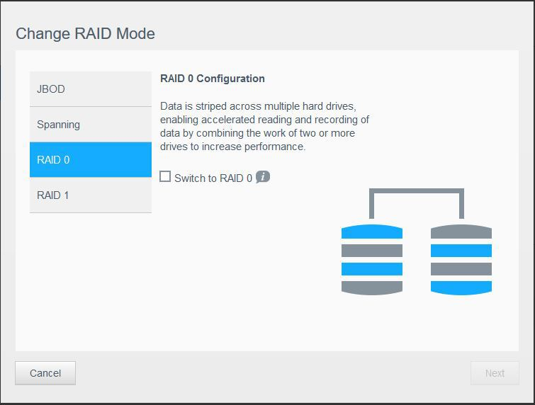
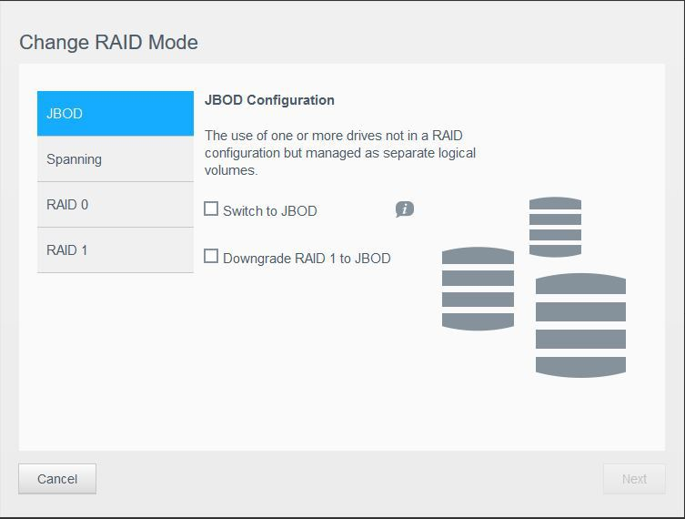
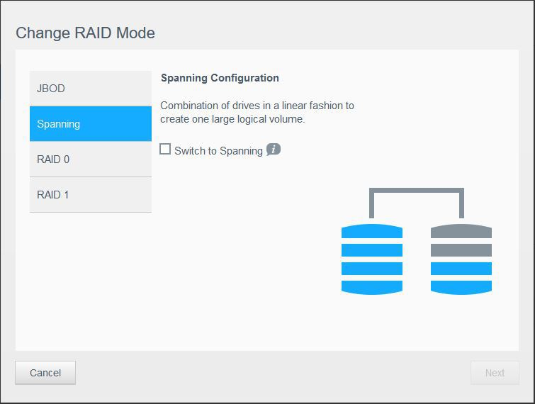

<!DOCTYPE html>
<html lang="en-us">
<title>ind3x</title>
<meta charset="utf-8">
<meta name="viewport" content="width=device-width, initial-scale=1.0">
<link rel="stylesheet" href="https://yinch3ng.github.io/css/minimal.css">
<link rel="canonical" href="https://yinch3ng.github.io/posts/diffraidjbodspan/">
<link rel="alternate" type="application/rss+xml" href="" title="ind3x">

<header>
  
    <a href="https://yinch3ng.github.io/" class="title">ind3x</a>
  
  
    <nav>
    
      <a href="/tags/">Tags</a>
    
      <a href="/about/">About</a>
    
    </nav>
  
</header>

<article>
  <header>
    <h1>Difference between raid job and spanning</h1>
    <time datetime="2024-03-09">2024-03-09</time>
  </header>
  <p></p>
<p></p>
<p></p>

</article>


</html>
